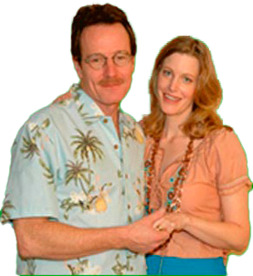

|
|
|

Mi padre es increíble. Es divertido, pero no me di cuenta hasta que descubrí que iba a morir. Que iba a suceder pronto. Que era real. Entonces pensé en muchas cosas. Cosas en las que no había pensado durante mucho tiempo. Supongo que por culpa de darlo por sentado o algo así. Quiero decir, nuestros padres siempre están ahí. Esperas que siempre te digan que limpies tu habitación o estudies más o tengas buenos modales o probar cosas nuevas para crecer y ser una persona más completa algún día. Y que te hagan madrugar el fin de semana para tener «tiempo en familia» y todas esas cosas que solían volverme loco. Ahora no me siento así. Todo es diferente desde que Papá recibió su diagnóstico. Desde que me di cuenta de que un día en el futuro cercano, podría no estar cerca para volverme loco.
Ahora me siento afortunada cuando me pregunta por mi día (antes odiaba totalmente esa pregunta) o me regaña para que llegue a casa a tiempo por la noche y sea responsable. Un día no estará aquí para preguntar. Ahora me siento afortunada cuando oigo su coche entrando en la entrada después del colegio. Incluso me gusta oírle toser. Significa que todavía está por aquí. Sigue siendo mi padre.
|  | 
|
Mi padre es el profesor de química de mi instituto y es irritantemente inteligente. Quiero decir, un supercerebro. Él sabe las cosas más aleatorias. Como que a temperatura ambiente el mercurio es el único metal que está en forma líquida, o que el agua se expande cuando baja la temperatura, y cuando se congela ocupa un 9% más de espacio. O que si viertes lentamente un puñado de sal en un vaso de agua totalmente lleno, no se desborda. De hecho, el nivel del agua bajará. Siempre está soltando pequeños datos sobre todo. Él no se da cuenta de lo friki que es al hacerlo, pero le encanta la química. Creo que realmente no comprende que no todo el mundo es amante de la química. Le gusta cocinar porque para él es química – sobre todo hace el desayuno – porque dice que las reacciones químicas ocurren constantemente mientras se cocina y siempre está explicando lo que ocurre mientras cocina. Yo no voy a su clase en el colegio, pero he oído que es un buen profesor. Practica mucho en casa, eso seguro.
Todo el tiempo que he estado en el instituto (estoy en segundo año) siempre he tenido que
escuchar lo que otros niños pensaban de él. Siempre fui el hijo del Sr. White. (A veces le llaman Mr. Wallabee que es el nombre de los zapatos tan feos que siempre lleva). Algunos niños lo despreciaban solo para cabrearme. Algunos niños simplemente lo despreciaban porque eso es lo que se hace con los profesores. Mi padre espera que todos den lo mejor de sí mismos, igual que él, y cuando no te esfuerzas al máximo, no te da tregua. Así es en casa y en la escuela. Me acabo de dar cuenta de lo buena que es esa cualidad. Eso es lo que le hace valiente en su batalla contra el cáncer y lo que me hizo valiente a mí también cuando era más joven. Lo quisiera o no. De todos modos, siempre quise ser un niño normal en la escuela, pero debido a que mi padre era profesor allí yo era diferente. Ahora me doy cuenta de dos cosas. Primero, ya soy diferente porque tengo C.P. así que eso es un hecho. Y dos, es el padre adecuado para mí. No puedo hacer muchas cosas físicas… debido a mi discapacidad y para mi padre no es un problema, y si lo sería con muchos otros padres que he conocido. Estarían decepcionados porque se dedican a deportes o lo que sea. Quiero decir, mi padre no tiene una discapacidad, pero seguro que no querrías verle lanzar un balón de fútbol. Así que en ese sentido, nos llevamos bien. Tiene sentido que él sea mi padre y yo su hijo. Lo que quiero decir es que ya no me importa lo que digan los niños en la escuela. La conclusión es que es un buen profesor y nadie puede decir que no se preocupa por lo que hace. Yo sé que a él se preocupa. Después de nuestra familia, la química y enseñar a los niños es lo que más le gusta. Realmente quiero asegurarme de que siga haciendo lo que le gusta hacer durante mucho tiempo. Por él, por sus alumnos y por mí y mi familiaHa sido una época muy dura en nuestra familia desde que mi padre tuvo cáncer. No quiero decir que haya un buen momento para algo tan horrible y aterrador como es esto, pero fue un mal momento para nosotros. Mi madre estaba embarazada de lo que ella llamaba un bebé sorpresa (que ahora es Holly y aunque es una recién nacida es increíblemente mona) y mi padre tiene y segundo trabajo extra para poder ayudar a pagar las facturas mensuales. Nunca hemos tenido mucho dinero, pero nos manteníamos hasta que recibimos las facturas médicas. Mi padre es bastante orgulloso – okay, muy orgulloso – y no quiere la caridad. Esta es la razón por la que estoy haciendo esto. No porque quiero cabrearle o enfadarle, sino porque quiero que tenga una opción por la que luchar no importa a que coste.
Una cosa que no entiendo es por qué salvar la vida de alguien cuesta más de lo que una persona normal puede pagar. Y por qué algunos médicos (normalmente los mejores) no aceptan seguros. Creo que eso está mal. Quiero decir, una de las grandes razones por las que mi padre no quería recibir tratamiento en absoluto en primer lugar fue porque él no quería dejarnos con una enorme deuda. Eso es lo que pasa con mi papá, nos quiere más que a nada. Más que a sí mismo. Pero las personas de su entorno queremos que intente todo lo que pueda para quedarse con nosotros el mayor tiempo posible. Esta cirugía es la única oportunidad que hay para salvar su vida, y nosotros no podemos pagarla. Cada día que pasa es un día menos que podré disfrutar con él. Y no quiero tener que contarle a mi hermana pequeña quién era mi padre. Quiero que ella lo conozca por sí misma.
tengo un padre maravilloso,
pero tiene problemastiene cancer de pulmon. Necesita
una operacion. ¡ya!tpara ayudar, por favor envie su
donacion a nuestro fondo para la
operacion y mantengan a mi padre
en sus oraciones.